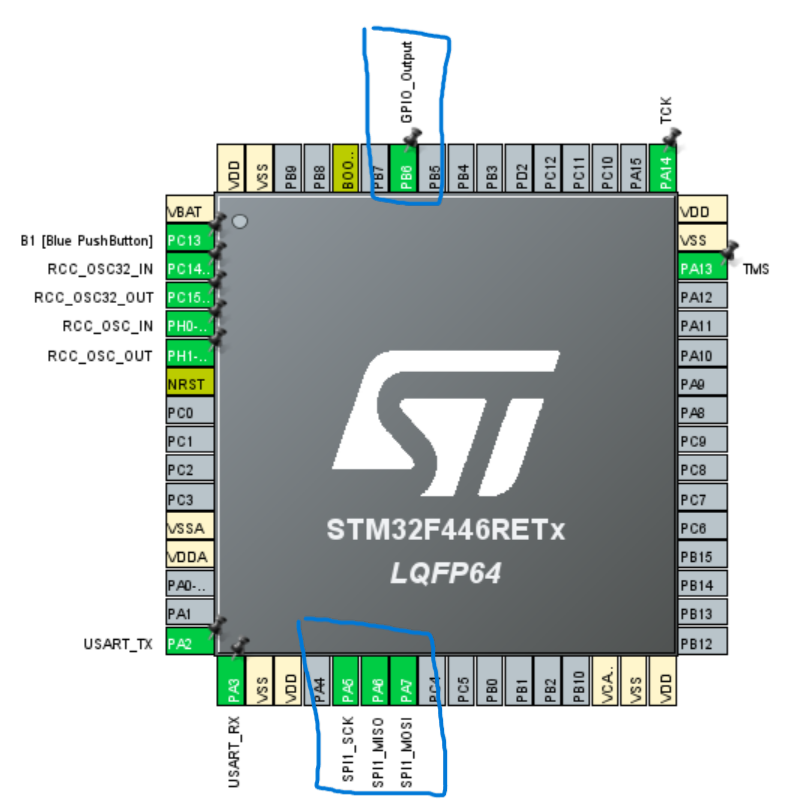
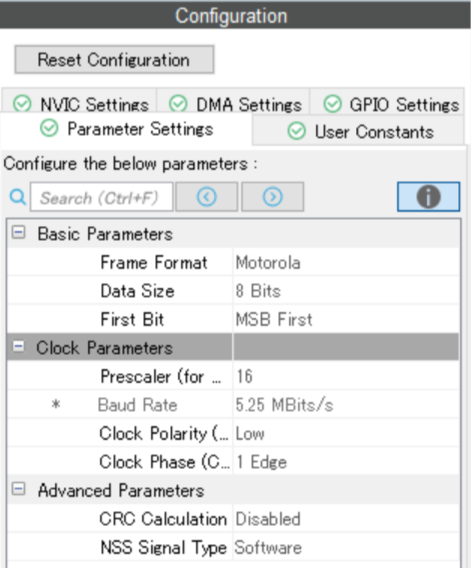
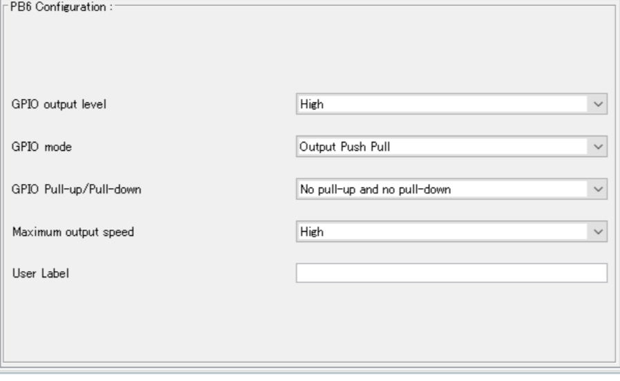

STM32資料 応用編3
SPI通信でセンサーのデータを読み取ってみよう
前回はI2C通信を使ったので同じ操作をSPI通信を使ってやってみよう
今回やること
作業の流れ
- ピンを割り当てる
- wrapper.cppにコードを書き込む
- センサーとSTM32をつなぐ
- TeraTermでデータを受信する
SPI通信とは
I2Cのようにセンサーと通信する時に使う通信形式の1つ
送受信の2本の通信線と、デバイス選択の信号線を使うことで高速通信を実現している
I2CとSPIの違い
簡単にI2CとSPIの違いを表にまとめてみた
例外は色々あるので、この通りにならないこともしばしばある
速度が早くいいことばかりに見えるが、デバイスごとに信号線が必要になるので
センターの数だけ配線が複雑になってしまうというデメリットを抱えている
| 要素 | I2C通信 | SPI通信 |
|---|---|---|
| 通信線 | 1本(SDA) | 2本(MISO, MOSI) |
| 信号線 | 1本(SCL) | 1本(SCK) |
| デバイス選択 | I2Cアドレス（プログラム） | 信号線(CS, ハード) |
| 通信速度（このセンサーの最大値） | 1Mbps | 24Mbps |
デバイス選択(CS)とは
SPI通信のCSピンに繋がる信号線は、選択時に0v、非選択時には3.3vに保っておく必要がある
そこでGPIOを使用し、通信直前にRESET、通信後にSETをすることでこの動作を実装できる
ピンの割り当て
ピンの設定
今回はSPI1を使うので図のようにSPIのピンを3つとGPIOを設定しよう
詳細設定
SPI1の設定を開き、BaudRateが1~5Mbits程度になるようにPrescalerの値を変更しよう
System CoreからGPIOを選択し、PB6の設定を変更しよう
回路
SPI通信は配線が増えてくるので、5VとGNDだけは間違えないように気を付けよう
ICM45686のピン配置について
今回は実際のデータシートと同じような形式で配線を紹介する
I2C通信で線をつないだ場所には20個のピンがあり、正面から見たときにこのように名前がついている
実際はこの図と回路図を見ながら配線をつないでいくことになる
| Pin2 | Pin4(CS) | (中略) | Pin14 | Pin16(SCLK) | Pin18(SDIO) | Pin20(SDO) |
|---|---|---|---|---|---|---|
| Pin1 | Pin3 | (中略) | Pin13(GND) | Pin15 | Pin17 | Pin19(5v) |
STM32との接続
先ほど割り当てたSTMのピンとICMのピンを図のようにつなげよう
| 役割 | STM32 | ICM45686 |
|---|---|---|
| 5v | 5v | Pin19 |
| GND | GND | Pin13 |
| データ(STM→ICM) | MOSI(D12) | Pin18 |
| データ(ICM→STM) | MISO(D11) | Pin20 |
| クロック | SCK(D13) | Pin16 |
| デバイス選択 | GPIO(D10) | Pin4 |
プログラム
I2Cと似た書き込みと読み取りの関数が用意されているので、まとめて紹介する
SPI通信で書き込みをする関数
引数が少なくレジスタアドレスの引数がないが、後で説明するので気にしないで大丈夫!
関数
HAL_SPI_Transmit(&hspix, TxBuffer, Size, TimeOut);この関数の引数
送信データはポインタを送る必要がある
SPI通信の場合は後述する理由のため、送信データはほとんど配列を渡すことになる
| 引数名 | 変数型 | 内容 |
|---|---|---|
| &hi2cx | SPI_HandleTypeDef* | SPIのポインタ（xはSPIの番号） |
| TxBuffer | uint8_t* | 送信データ（ポインタ） |
| Size | uint16_t | 送信データサイズ |
| TimeOut | uint32_t | 最大実行時間(超えたら諦める) |
SPI通信で読み取りをする関数
SPI通信では書き込みと読み取りを同時に行うことができるため、このような関数名になっている
関数
HAL_SPI_TransmitReceive(&hspix, TxBuffer, RxBuffer, Size, TimeOut);この関数の引数
送信データはポインタを送る必要がある
SPI通信の場合は後述する理由のため、送信データはほとんど配列を渡すことになる
| 引数名 | 変数型 | 内容 |
|---|---|---|
| &hi2cx | SPI_HandleTypeDef* | SPIのポインタ（xはSPIの番号） |
| TxBuffer | uint8_t* | 送信データ（ポインタ） |
| RxBuffer | uint8_t* | 受受信データ（ポインタ） |
| Size | uint16_t | 送信データサイズ |
| TimeOut | uint32_t | 最大実行時間(超えたら諦める) |
データの書き込みと読み取りの流れ
詳しいことまで知る必要はないが、例を出しつつ簡単に紹介する
書き込み
SPI通信での書き込みでは、レジスタアドレス→書き込みたいデータを連続で送信する
この前後、デバイス選択をするためにCSピンにつながっているGPIOを操作している
uint8_t TxBuffer[2] = {};
TxBuffer[0] = REGISTER_ADDR; //書き込みたいレジスタのアドレス
TxBuffer[1] = 0x15; //書き込みたい値
HAL_GPIO_WritePin(GPIOA, GPIO_PIN_5, GPIO_PIN_RESET);
HAL_SPI_Transmit(&hspi1, TxBuffer, 2, 1000);
HAL_GPIO_WritePin(GPIOA, GPIO_PIN_5, GPIO_PIN_SET);読み取り
SPI通信での読み取りでは、まずレジスタアドレスの8桁目を1にする
これはレジスタアドレスの後の | 0x80;という操作で実装している
その後RxBufferの2番目の要素に読み取った値が入る仕組みになっている
uint8_t TxBuffer[2] = {};
uint8_t RxBuffer[2] = {};
TxTmp[0] = REGISTER_ADDR | 0x80;//読み取りたいレジスタのアドレス
TxTmp[1] = 0x00;
HAL_GPIO_WritePin(GPIOA, GPIO_PIN_5, GPIO_PIN_RESET);
HAL_SPI_TransmitReceive(&hspi1, TxBuffer, RxBuffer, 2, 1000);
HAL_GPIO_WritePin(GPIOA, GPIO_PIN_5, GPIO_PIN_SET);
uint8_t ReadValue = RxBuffer[2]複数バイトの読み取りについて
紹介したコードでは1バイトの受信しかできない
基本は繰り返すことで実装すれば問題ないが、関数などにまとめたい場合はfor文などを使って書くことになる
このコードでは連続する複数のレジスタを読み取る例である（センサーデータを読み取るときに使いそう）
色々考えてみるともっといい書き方がありそうなので、見つけたら教えてくれるとうれしい
uint8_t RxBuffer[2] = {};
uint8_t TxBuffer[2] = {};
uint8_t Data[12] = {};
for(uint8_t i=0; i<12; i++){
TxBuffer[0] = 0x00 | 0x80; //レジスタアドレス
TxBuffer[1] = 0x00;
HAL_GPIO_WritePin(GPIOA, GPIO_PIN_5, GPIO_PIN_RESET);
HAL_SPI_TransmitReceive(&hspi1, TxBuffer, RxBuffer, 2, 1000);
HAL_GPIO_WritePin(GPIOA, GPIO_PIN_5, GPIO_PIN_SET);
Data[i] = RxBuffer[1];
}サンプルコード
実際に通信するためのコードを書いてみよう
I2Cと違い通信の操作にたくさんのプログラムが必要なので、ReadとWriteの関数を作成してみるのもいいかも？
使用するレジスタ
| レジスタ名 | レジスタアドレス | 内容 | 値 |
|---|---|---|---|
| ACEEL_DATA_X1_UI | 0x00 | センターデータ(ここから12byteにAccelとGyroのデータがある） | 読み取り専用 |
| PWR_MGMT | 0x10 | センサーの電源設定 | 0x0f（LowNoizeMode) |
| WIA | 0x72 | 通信チェック用 | 読み取り専用(0xE9が返ってくる) |
今回は普通に難しいので、わからなくて当然に近いかもしれない、、
いつも以上に気軽に質問をしてね！
終わりに
今回は実際にセンサーデータを取得してみました